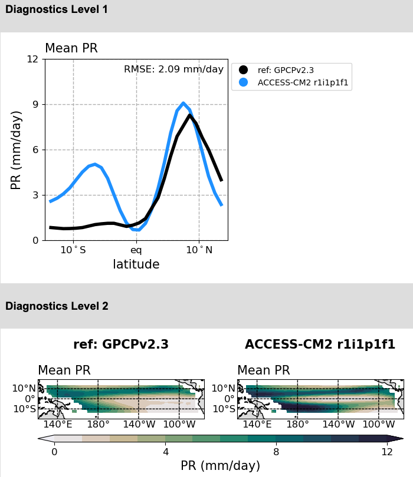

(Prototype)
MIPs:
CMIP5, CMIP6
EXPs:
historical, amip
Created:
2025-03-19 17:40:38
VIEWER
Mean Climate Dive Down Plots
Mean Climate Portrait Plots
Extratropical Modes of Variability Plots

ENSO Metric Plots